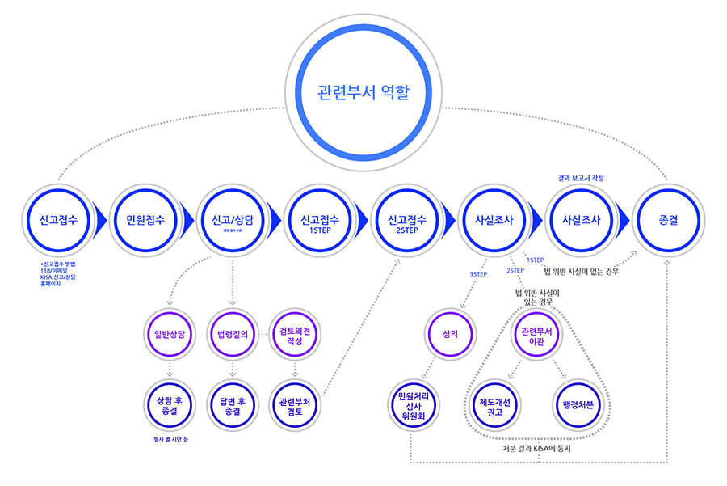

개인정보보호
개인정보침해 신고/상담
- HOME >
- 개인정보 보호 >
- 침해 신고/상담
개인정보 침해 신고/상담 절차
개인정보 침해 센터
한국인터넷진흥원 개인정보침해 신고센터는 「개인정보 보호법」제62조, 동법시행령 제59조 또는 「정보통신망 이용촉진
및 정보보호 등에 관한 법률」(이하 정보통신망법) 제52조, 동법시행령 제66조에 따라 개인정보에 관한 권리, 이익 침해
사실 신고의 접수ㆍ처리 등에 관한 업무를 담당하고 있습니다.
민원신청 접수 전 임의적 종결 사유
민원내용만으로 개인정보 침해 여부의 판단이 모호한 경우
반복 민원 및 당사자의 소재 파악이 어려운 경우
개인 간의 분쟁, 소송·수사 중이거나 심판 등이 결정된 민원 등
관련부서 역할
민원접수
온라인 또는 전화 등의 방법을 통하여 개인정보와 관련한 일반적 문의사항, 법령질의, 개인정보침해신고 등 개인정보와 관련된 것 이라면 무엇이든지 문의하실 수 있습니다.
민원신청
민원신청이 접수되면 먼저 상담원들이 1차적으로 검토하여 내용에 따라 분류하여 답변을 드립니다. 간략하게 상담답변으로 종결할 수 있는 내용은 원칙적으로 7일(법령질의는 14일) 이내에 온라인으로 답변해 드립니다.
신고접수
좀 더 자세하게 사실조사가 필요하거나 법률검토가 필요한 부분에 대해서는 우선 신청인에게 민원접수 사실을 통보합니다. 이어서 민원처리담당자는 양 당사자의 의견청취, 증거수집, 전문가 자문 등 필요한 사실조사를 실시합니다.
사실조사 실시
사실조사를 진행하여야 하는 내용은 사건 접수 후 통상 60일 이내에 처리하도록 하고 있으며 사안에 따라 관련 전문가의 자문, 관계기관의 사실확인 및 의견조회, 현지 출장조사 등으로 사건처리기간이 다소 지연될 수 있습니다.
사실조사 결과보고서 작성 후 방안
피신고인과의 원만한 해결 등으로 사실조사의 실익이 없어진 경우 담당자에게 전자우편을 통해 민원철회 의사를 표시함에 따라 민원철회하실 수 있습니다.
종결
사실조사가 완료되면 결과는 민원신청 시 기재한 전자우편 주소로 발송됩니다.
개인정보 보호법 적용 대상이 아닌 사안별 신고기관 안내
| 구분 | 기관명 | 연락처 | 홈페이지 주소 |
|---|---|---|---|
| 해킹,사기,불법사이트 등 형사처벌 시안 | 경찰청 사이버 테러 대응센터 | [민원상담] 02)393-9112 182 |
www.ctrc.go.kr |
| 소비자피해, 불만사항, 분쟁조정 | 한국 소비자 원 | [민원상담] 02)3460-3000 1372 |
www.kca.go.kr |
| 공정거래법상의 불공정 거래행위 | 한국 공정 거래 조정원 | [민원상담] 02)3445-9898 1588-1490 |
www.kofair.or.kr |
| 금융거래 관련 피해 및 분쟁 조정 | 금융감독원 | [법률상담] 02)532-0132 132 |
www.fss.or.kr |
| 민 형사 등 각종 소송 관련 상담 | 대한법률 구조 공단 | [민원상담] 02)3145-5114 1332 |
www.klac.or.kr |